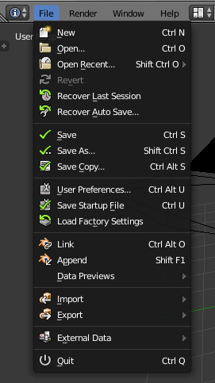

The first time you open up Blender can be daunting.
What are all these icons and buttons for?
What do they do? and most importantly, how do I start creating things in 3d?!
Click on any of the links below to automatically jump to any section.
This article intends to break down Blenders user interface into separate sections
and make it easier for you to get started with using the program. The user interface features 4-5 main areas
most of which include features and options that are used frequently.
The first section is also the one you'll likely use the most in Blender when you're starting out.
The main viewport is used to manipulate your 3d objects and other parts of your scene as such as cameras and lights.
Whenever you're editing or moving objects around in the scene it's key to make sure your cursor is inside of the viewport.
If you leave the cursor outside of the viewport it's likely that Blender will not recognize the command.
Using the 3d viewport enables you to perform multiple operations.
Most of the options in this toolbar are very similar to the options you've
probably seen before in other programs you've used. The first option, "File", works much the same way as it does in most other programs.
As well as enabling you to save your file, load another file and start a new file Blender also has a few extra options.

The first of these are 2 "Recovery" options, "Recover last session" and "Recover autosave",
"Recover last session" is used to open the last session/file you had open if the program or your pc crashes. "Recover autosave" gives you a few more options.
As Blender periodically saves your work. Using the autosave option allows you to scroll through Blenders most recent autosaves and reload to a previous state.
Each autosave has a name and a date to make it easy for you to tell exactly which file will be loaded and when it was last auto saved.
After the "Recovery" options there are a couple of save options that you're probably used to seeing in most other programs.
Underneath those options is an option labelled "User Preferences". Clicking this option opens up a new window that enables you to change multiple options in Blender and ultimately
tailor the program to work best for you, this includes changing certain elements of the interface, changing keyboard shortcuts or even installing your own addons that you've written yourself. Just below that is a "Load Factory Settings" option which means if you change something wrong or change too many things you can